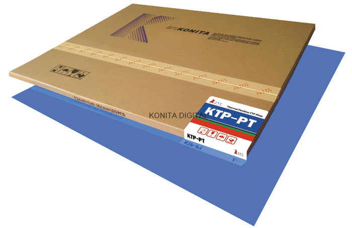
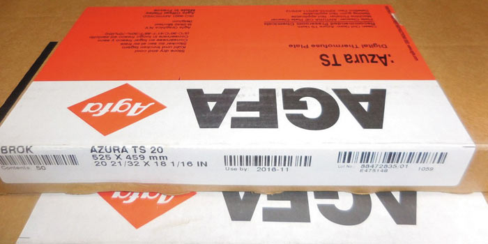
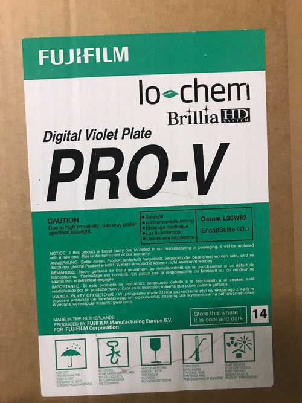
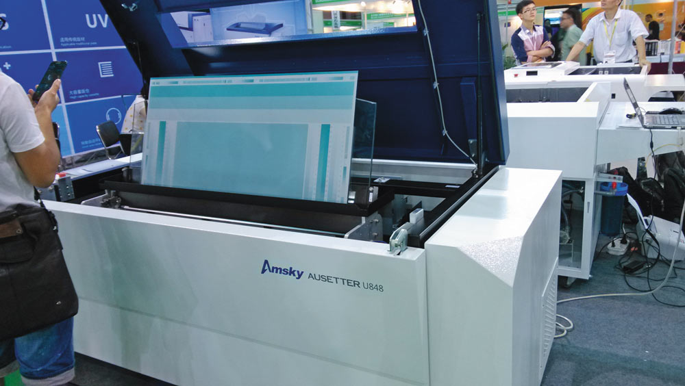

Типы формных пластин
Теперь более подробно расскажем об упомянутых в начале стаьи типах формных пластин. Формные пластины для CtP имеют бумажную, полимерную или металлическую основу.
Основы пластин
Бумажная основа. Это самые дешевые пластины для CtP. Их можно увидеть в маленьких типографиях коммерческой печати, в салонах быстрой печати. Они предназначены для работ с низким разрешением, для которых приводка не имеет значения. Тиражеустойчивость, или тиражестойкость, таких форм низкая, обычно менее 10 000 оттисков. Разрешающая способность чаще всего не превышает 133 lpi. Как правило, употребляются они для однокрасочной печати, потому что печатные формы на бумажной основе, конечно, выдерживают тиражи до 5000 экземпляров, однако изза пластической деформации увлажненной бумажной основы в зоне контакта формного и офсетного цилиндров штриховые элементы и растровые точки сюжета искажаются.
Полимерная основа. Эти пластины имеют более высокую разрешающую способность, чем бумажные, в то же время они дешевле металлических. Их применяют для работ среднего уровня качества для печати в одну и две краски, а также для четырехкрасочных заказов, если цветопередача, приводка и четкость изображения некритичны.
Формный материал представляет собой полиэстровую пленку толщиной около 0,15 мм, одна из сторон которой имеет гидрофильные свойства. Эта сторона воспринимает тонер, наносимый лазерным принтером или ксероксом. Участки, не покрытые тонером, в процессе печати удерживают на себе пленку увлажняющего раствора и отталкивают краску, тогда как запечатанные участки, наоборот, ее воспринимают. Поскольку это светочувствительные пластины, их загрузка в экспонирующее устройство выполняется в комнате со специальным освещением, так называемой «темной» или «желтой» комнате. Такие формные пластины доступны в формате до 40 дюймов, или 1000 мм, и толщиной 0,15 и 0,3 мм. Пластины толщиной 0,3 мм являются уже третьим поколением этого типа материалов, имеющим толщину, аналогичную толщине формных пластин на металлической основе для четырех и восьмикрасочных машин.
При установке на формном цилиндре и превышении усилия натяжения может возникнуть растяжение полиэстровой печатной формы. Также растяжение формы часто наблюдается на полноформатных машинах. В настоящий момент возможно использование полиэстровых печатных форм при полноцветной печати. При двух и четырехкрасочной печати чаще наблюдается растяжение бумаги, чем формы. Тиражестойкость полиэстровых форм составляет 20 00025 000 оттисков. Максимальная линиатура — 150175 lpi.
Металлическая основа. Под термином «металлическая» мы подразумеваем алюминиевую основу; такие пластины способны поддерживать самую резкую точку и самый высокий уровень приводки. Существует четыре основные разновидности металлических пластин: галогенидосеребряные пластины, фотополимерные пластины, термальные пластины и гибридные.
Основными производителями формных пластин для технологии CtP являются компании Fujifilm, Agfa, DuPont, Kodak Polychrome Graphics, Presstek, Lastra, Mitsubishi, Creo.
Виды пластин
Как было сказано выше, в зависимости от типа источника лазерного излучения производители предлагают различные формные пластины, которые можно разделить на фотополимерные, серебросодержащие, термочувствительные, гибридные и прочие.
Серебросодержащие пластины. Пластины покрыты светочувствительной эмульсией, содержащей галогениды серебра. Они состоят из трех слоев: барьерного, эмульсионного и противострессового, нанесенных на алюминиевую основу, предварительно подвергнутую электрохимическому зернению, анодированию и специальной обработке для катализации миграции серебра и обеспечения прочности его закрепления на пластине. Непосредственно на алюминиевой основе также находятся мельчайшие зародыши коллоидального серебра, в ходе последующей обработки восстанавливающиеся до металлического.
Все три водорастворимых слоя наносятся за один цикл. Данная технология нанесения многослойных покрытий очень близка к используемой в производстве фототехнических пленок и позволяет оптимизировать свойства пластины за счет придания каждому слою специфических характеристик. Так, барьерный слой изготавливается из безжелатинового полимера, содержит частицы, способствующие наиболее полному удалению остатков всех слоев в неэкспонированной области в ходе проявки пластин, что стабилизирует ее печатные свойства. Кроме того, слой содержит светопоглощающие компоненты для минимизации отражения от алюминиевой основы. Эмульсионный слой таких пластин состоит из светочувствительных галогенидов серебра, обеспечивающих высокую спектральную чувствительность материала и скорость экспонирования. Верхний антистрессовый слой служит для защиты эмульсионного слоя. Содержит также специальные полимерные соединения, облегчающие удаление прокладочной бумаги в автоматических системах, и светопоглощающие в определенной зоне спектра компоненты для оптимизации разрешения и условий работы с безопасным освещением.
Серебросодержащие пластины являются очень чувствительными к излучению и простыми в использовании, но недостатком их является низкая тиражестойкость — до 350 000 оттисков, а кроме того, согласно закону об охране окружающей среды, они требуют процедуры регенерации серебра после их использования.
Фотополимерные пластины. Это пластины с алюминиевой основой и полимерным покрытием, которое придает им исключительную тиражеустойчивость — 200 000 и более оттисков. Дополнительный обжиг печатных форм до печати тиража может увеличить срок службы печатной формы до 400 0001 000 000 оттисков. Разрешающая способность печатной формы позволяет работать с линиатурой растра 200 lpi и «стохастикой» от 20 мкм, она выдерживает очень высокие скорости печати. Эти пластины предназначены для экспонирования в устройствах с лазером видимого света — зеленым или фиолетовым.
Фотополимерная технология экспонирования предполагает негативный процесс, то есть лазерной засветке подвергаются будущие печатные элементы. Пластины являются промежуточными по чувствительности между термальными и серебросодержащими.
Данный материал был показан в 1993 году на устройствах «Гербер Кресент/42» (Gerber Crescent/42) и «Скайтек Доплэйт» (Scitex Doplate). Недостатком фотополимера является возникновение пены в обрабатывающих реактивах при проявлении. Вдобавок эти пластины нуждаются в нагреве после экспонирования. Возможно, они не самые чувствительные, но у них очень высокая тиражестойкость и печатные характеристики.
Термальные пластины. Состоят из трех слоев: алюминиевой подложки, печатного слоя и термочувствительного слоя, который имеет толщину менее 1 мкм, то есть в 100 раз тоньше человеческого волоса.

Рис. 3. Термальные пластины Konita
Регистрация изображения на этих пластинах выполняется излучением невидимого спектра, близкого к инфракрасному. При поглощении ИКэнергии поверхность пластины нагревается и образует участки изображения, с которых удаляется защитный слой, — происходит процесс абляции, размывания (это «аблятивная» технология). Высокая чувствительность верхнего слоя к ИКизлучению обеспечивает непревзойденную скорость формирования изображений, поскольку для экспонирования пластины лазером требуется мало времени. В процессе экспонирования свойства верхнего слоя преобразуются под действием наведенного тепла, поскольку при лазерном облучении температура слоя поднимается до 400 °С, что позволяет назвать этот процесс термоформированием изображения.
Данный тип пластин делится на три группы (поколения):
Термальным пластинам (рис. 3) свойственна высокая разрешающая способность, тиражеустойчивость обычно указывается производителями на уровне 200 000 и более оттисков. При дополнительном обжиге некоторые пластины способны выдержать миллионный тираж. Одни разновидности термальных пластин рассчитаны на трехсоставную проявку, другие подвергаются предварительному обжигу, который заканчивает процесс записи изображения. Поскольку экспонирование производят при помощи лазеров вне видимого спектра, нет необходимости в затемнении или специальном защитном освещении. При обработке термочувствительных пластин второго поколения исключается трудоемкая стадия предварительного нагрева, требующая временных и энергетических затрат. Благодаря тому что пластины имеют стойкие к разного рода химическим реагентам печатные элементы, их можно использовать с самыми разными вспомогательными материалами и красками, например в печатных машинах со спиртовой системой увлажнения и при печати УФотверждаемыми красками. Пластины обеспечивают воспроизведение растровой точки в интервале 199% при линиатуре до 200 lpi, что позволяет использовать их для печати работ, требующих самого высокого качества.
Но, несмотря на эти преимущества, слабой стороной данной технологии является более высокая совокупная стоимость термальных пластин и высокая стоимость термальных экспонирующих устройств по сравнению со светочувствительными системами. Такие пластины требуют оснащения устройства СtР вакуумной установкой для удаления отходов.
Биметаллические термальные пластины. Американская фирма Printing Developments, Inc. (PDI) производит CtPпластины Prisma, состоящие из термочувствительного (830 нм) полимера, нанесенного на покрытое медью основание из алюминия или стали. Медь — отличный олеофильный металл.
В этих пластинах лазер экспонирует область пробелов (позитивный процесс), при этом связи полимера разрушаются и он становится растворимым. При проявлении удаляются части покрытия, экспонированные лазером. Последующая химическая обработка растворяет медь на тех участках, где полимер был удален.
Беспроцессные пластины. При сравнении различных технологий CtP обычно сопоставляют характеристики экспонирующих установок и параметры пластин. Об особенностях же обработки экспонированных пластин часто забывают, а иногда и намеренно умалчивают, поскольку этот аналоговый процесс не только портит картину, но порой и требует немалых затрат.
Сущность процесса обработки состоит в визуализации сформированного при экспонировании скрытого изображения и в придании форме требуемых эксплуатационных характеристик. В процессе обработки пластина превращается в печатную форму: ее печатающие элементы приобретают свойства воспринимать краску, а пробельные элементы начинают воспринимать увлажняющий раствор или отталкивать краску (в пластинах для печати без увлажнения).
Обработка экспонированных пластин включает следующие операции:
Понятно, что необходимость обработки экспонированных пластин усложняет, удлиняет и удорожает процесс изготовления печатных форм. Даже несмотря на то, что современные процессоры работают в автоматическом режиме, процесс проявки является потенциальным источником различных ошибок и возможной причиной снижения качества форм. Продолжительность обработки неодинакова для разных типов пластин, однако в любом случае необходимость обработки увеличивает время изготовления форм.

Рис. 4. Беспроцессные термальные пластины Agfa Azura TS
Затраты на обработку пластин складываются из следующих компонентов:
В конце 2005 года канадская консалтинговая компания J Zarwan Partners провела исследование североамериканского рынка с целью определения величины затрат на изготовление форм по технологии CtP. Выяснилось, что обработка увеличивает стоимость печатной формы примерно на 30%. Типографии среднего размера ежегодно тратят от 20 000 до 35 000 долл. на покупку химии, а затраты небольших типографий составляют от 10 000 до 15 000 долл. в год. Суммарные затраты на амортизацию, использование производственных площадей, обслуживание оборудования, электроэнергию и утилизацию растворов примерно равны затратам на покупку химии. Таким образом, обработка экспонированных пластин стоит для североамериканских типографий малых и средних размеров от 20 000 до 70 000 долл. в год. Суммы немалые, и вряд ли при наличии альтернативы химически обрабатываемым пластинам ктонибудь откажется эти деньги сэкономить.
На drupa 2004 демонстрировались термальные пластины третьего поколения — беспроцессные (рис. 4). Под действием термального лазера поверхность пластины меняет свои свойства с краскоотталкивающих на красковосприимчивые (либо наоборот), поэтому она не нуждается в дальнейшей обработке. Первые не нуждающиеся в химической обработке формные материалы были разработаны на заре технологии CtP. В настоящее время существует два вида таких формных материалов: с термически удаляемыми слоями (термоабляционные) и со слоями, изменяющими фазовое состояние.
Термоабляционные пластины являются многослойными, а пробельные элементы в них формируются на поверхности специального гидрофильного или олеофобного слоя. В процессе экспонирования происходит избирательное термическое удаление специального абсорбирующего ИКизлучение слоя. Существуют как позитивные, так и негативные версии термоабляционных пластин. В негативных пластинах олеофобный слой находится выше олеофильного печатного слоя, и в процессе экспонирования происходит его абляция с будущих печатающих элементов формы. В позитивных пластинах все наоборот: выше находится олеофильный печатный слой, удаляемый в процессе экспонирования с будущих пробельных элементов формы. В процессе экспонирования продукты горения удаляются системой вытяжки, которой должно быть оснащено устройство CtP, а после экспонирования пластина промывается водой.
Основой термоабляционных формных материалов служат алюминиевые пластины или полиэфирные пленки.
Кроме того, существуют пластины со слоями, изменяющими фазовое состояние, главное отличие которых — более высокое разрешение слоя (за счет мелких частиц термопластичного полимера). Впервые они были разработаны компанией Agfa. Такие пластины имеют двухслойную структуру: на алюминиевую подложку нанесен слой олеофильного полимера, изменяющего свое фазовое состояние под действием ИКизлучения. Экспонированные частицы полимера сцепляются друг с другом и с алюминиевой основой формы, а неэкспонированный полимер сохраняет с основой лишь слабую связь.
Проявка формы производится в специальном процессоре или непосредственно в печатной машине. В первом случае неэкспонированный полимер смывается в процессе гуммирования, а во втором его смачивают накатные валики увлажняющего аппарата, и за несколько оборотов формного цилиндра полимер полностью переносится с формы на приладочные оттиски, после чего может выполняться печать тиража.
Самые узнаваемые на рынке беспроцессные пластины — это, пожалуй, Agfa Azura: Azura, Azura TS, Azura TU и, наконец, Agfa Azura TE.
Слой Azura TE, так же как и ее предшественник, состоит из микрогранул термопластика, скрепленного растворимым связующим. Печатные же элементы в плейтсеттере образуются во время засветки в CtP под действием инфракрасного лазерного излучения, спекаются в монолит и надежно закрепляются на алюминии. Но есть и существенное отличие Azura TE от других пластин Agfa, изготовленных по данной технологии. После экспонирования она не нуждается в специальной обработке гуммирующим раствором. Благодаря водорастворимому связующему очищение пробелов может происходить непосредственно в печатной машине увлажняющим раствором.
Фиолетовые пластины. Беспроцессные пластины для экспонирования фиолетовым лазером анонсировали компании Agfa и Fujifilm. При этом если Agfa позиционирует свою разработку для газетной печати, то пластины Fujifilm Brillia PROV (рис. 5) предназначены для печати коммерческой продукции.
Как уже упоминалось, фиолетовая технология, при которой экспонируются серебросодержащие или фотополимерные пластины с высокой светочувствительностью (требуется неактиничное освещение), позволяет применять маломощные, достаточно дешевые лазеры. Источником света в фиолетовой CtP служит один диодный лазер, который, согласно утверждениям производителей и поставщиков этой техники, несложно заменить. Лазер включается только на время экспонирования пластины, что, вместе с небольшой мощностью, увеличивает срок его службы.

Рис. 5. Фиолетовые пластины Fujifilm Brillia PRO-V
Серебросодержащие пластины — позитивные, обеспечивающие высокое разрешение и хорошую тиражестойкость (до 350 000 отпечатков). Для работы с ними требуется неактиничное (безопасное для светочувствительного слоя) освещение. Серебросодержащие пластины не подлежат обжигу и исключают использование специальных (УФ или гибридных) красок. «Серебряный» вариант пластин наименее экологичен: отработанные формы требуют особых условий для утилизации.
Гибридные пластины. Пластины представляют собой комбинацию диффузии серебра и фотополимерную технологию. В них используется обычная серебросодержащая эмульсия, нанесенная поверх фотополимерной эмульсии, применяемой в традиционных пластинах. Изображение на пластине формируется на поверхности эмульсии аргоновым или YAGлазером малой мощности по технологии диффузии серебра. Затем пластина проходит обработку в две стадии.
На первой стадии происходит процесс проявления изображения, аналогичный проявлению фотопленки, только без прозрачной подложки. Вместо этого частички серебра оседают на поверхности фотополимерной эмульсии, нанесенной на металлическую основу.
Вторая стадия заключается в формировании изображения на фотополимерном слое стандартным УФизлучением, а осажденное серебро используется как маска. Эти пластины объединяют достоинства серебросодержащих и фотополимерных пластин и могут воспроизводить точку 199%; но печатнотехнические свойства этих пластин такие же, как у традиционных, с тиражестойкостью до 300 000 оттисков. Есть некоторые ограничения по применению этих пластин изза экологических соображений. А процессоры для их обработки сложны и громоздки, а также нуждаются в более тщательной очистке, чем процессоры для серебросодержащих или фотополимерных пластин.
Пластины для «сухого» офсета
Одна из самых интересных задач, которую поставили перед собой изыскатели в области печати за последние сорок лет, — это возможность обнаружить способ устранения увлажняющего раствора в офсете. Печатать без воды означало бы достижение двух больших преимуществ:
В начале 1980х годов известная японская фирма Toray Industries запатентовала пластину, характеристики экспонирования и проявки которой совершенно сходны с характеристиками традиционных пластин, но благодаря использованию краски особого типа она обеспечивает печать без смачивания.
Возможность не смачивать пластину до нанесения краски появилась благодаря присутствию в пробельных элементах слоя силикона, который отторгает краску.
Пластина состоит из алюминиевой основы, на которую нанесен слой фотополимера, а на него — слой силикона. Толщина слоя силикона — около 2 мкм. Силикон — кремнийорганический полимер — высокомолекулярное соединение, содержащее атомы кремния, углерода и других элементов. Он состоит из макромолекул на базе оксида кремния, имеющих линейную или циклическую структуру.

Рис. 6. Ausetter U848 — газетная система CtCP Amsky для экспонирования на традиционных печатных формах
Данный силиконовый слой выполняет функцию отталкивания краски (аналогично функции воды в офсете с увлажнением), что позволяет производить офсетную печать без контроля за балансом «краска — вода». В англоязычной литературе его принято обозначать термином «weak fluid boundary layer» (WFBL) — жидкий разделительный слой с низким поверхностным натяжением. На стадии экспонирования свет определяет химическую реакцию, посредством которой фотополимер образует молекулярные связи с силиконовым слоем. Следовательно, на стадии проявки те участки, куда свет не дошел, легко устраняются, и лежащий под ними фоточувствительный слой становится участком, восприимчивым к краске; а те участки, где экспонированный силикон отвержден, станут местами отторжения.
Отторжение краски возможно, поскольку кремниевые соединения не принимают никакие жидкости, содержащие полярные молекулы. Растительные масла обычных красок содержат некоторое количество таких молекул, но недостаточно, чтобы пластины отторгли их.
Пластины для офсета без увлажнения проявляются химикомеханическим способом с использованием химических реактивов или воды.
В настоящее время разработаны негативные и позитивные химически проявляемые пластины, которые экспонируются УФизлучением или ИКлазерами. Проявка пластин включает два этапа: химическую обработку и удаление силиконового слоя с печатающих элементов. В процессе химической обработки негативных пластин регистрирующий слой теряет чувствительность к свету или теплу, а его экспонированные участки теряют связь с силиконовым слоем. При обработке позитивных пластин адгезия экспонированных участков к силикону усиливается. Удаление силикона выполняется механическим или химикомеханическим способом.
По факту, формы для сухого офсета являются разновидностью печатных форм глубокой печати. Ну, или, если угодно, глубокой автотипии — здесь мы видим одинаковую глубину печатающих элементов с их разной площадью. Соответственно, элементы изображения находятся ниже поверхности формы.
Технология Computer-to-Conventional Plate (СtCР)
ComputertoConventional Plate — одна из перспективных технологий, суть которой заключается в цифровом экспонировании обычных формных пластин, чувствительных к ультрафиолету. Сегодня такие пластины составляют примерно 90% всех экспонируемых в мире металлических пластин, поэтому они существенно дешевле «цифровых», экспонируемых по технологии СtP. Компания BasysPrint еще в 1995 году предложила устройство UVSetter, в котором мощное излучение ртутной лампы подается на специальный чип DMD, состоящий из 800 тыс. управляемых микрозеркал (размещенных на площади 2 см2). Каждое зеркало посредством специальной оптической системы либо отправляет световой сигнал в нужное место пластины, либо нет, формируя один пиксел изображения. При этом у растровых точек края получаются очень четкими, а суммарное разрешение составляет 2400 dpi.
В 2000 году компания PurupEscofot продемонстрировала устройство Dicon. Излучение мощной ультрафиолетовой лампы по световодам подается на несколько специальных светопереключаемых линеек, элементы которых способны пропускать излучение под воздействием управляющих импульсов. Каждый элемент имеет размер 20 мкм, что позволяет экспонировать формы с разрешением 2540 dpi.
Компания Amsky производит аппараты для вывода форм двух видов: Aurora 800 — с автоматической выгрузкой экспонированных пластин в проявочный процессор и Ausetter — с ручной загрузкойвыгрузкой.
Модели ряда Ausetter выпускаются двух форматов — В2 и В1, тогда как модели Aurora — только В1. Оба модельных ряда производятся для экспонирования и термальных, и ультрафиолетовых пластин. Все модели имеют общую механическую часть, различается лишь длина внешнего барабана по оси. Каждая модель может быть оснащена одной из трех экспонирующих систем, от которой будет зависеть скорость экспонирования пластин. Модели Ausetter 400 оснащаются головками с 24, 32 или 48 источниками света, а модели Ausetter 800 и Aurora 800 имеют 32, 48 или 64 лазера (рис. 6).
В зависимости от количества лазерных диодов устройства могут производить 16, 22 или 28 форм максимального для своего модельного ряда формата в час. Повторяемость составляет 5 мкм для четырех последовательно экспонируемых пластин на одной и той же машине, между двумя разными машинами отклонение укладывается в 15 мкм.
Данные в CtP поступают по интерфейсу USB 2.0, что упрощает взаимодействие в процессе передачи файлов на вывод. В комплекте с CtP поставляется программный модуль, принимающий файлы в формате 1bit TIFF. С помощью этого модуля можно подключаться ко всем популярным на рынке системам растрирования.
* * *
В завершение хотелось бы отметить, что любая классификация не может быть окончательной. Она всегда остается открытой для новых технологий, в том числе и неизвестных в настоящее время.